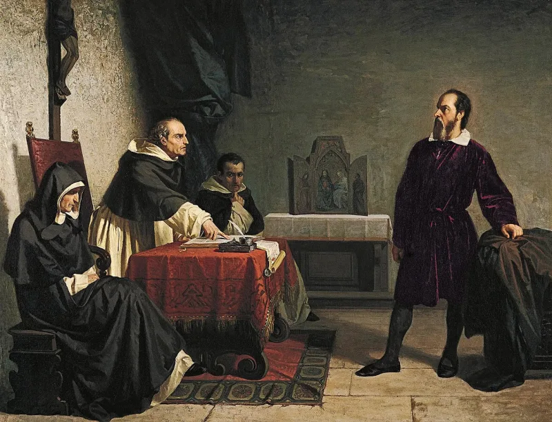
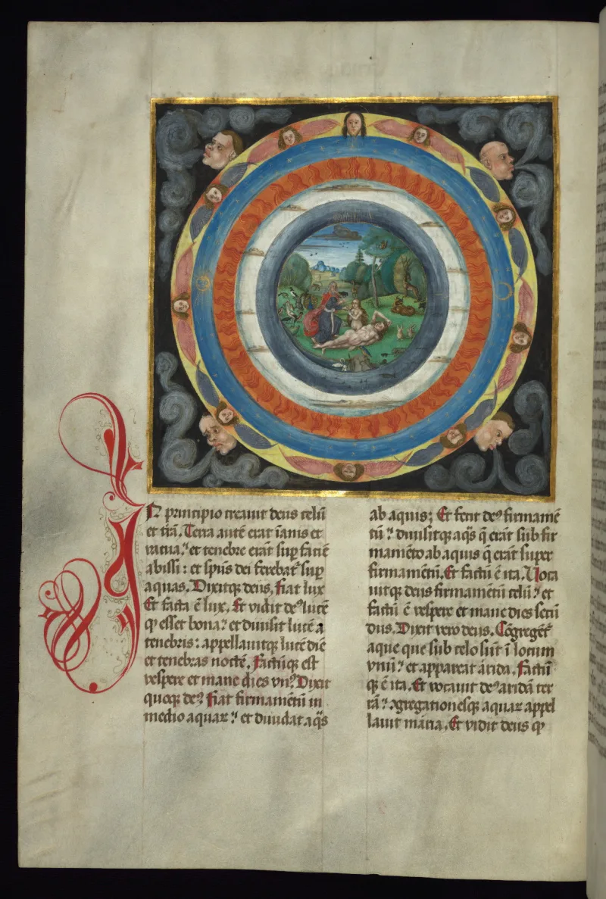

No good counter-argument has been published by atheist philosophers.
The line is that science has disproven Genesis, so Christianity is false. It assumes young-earth literalism is the Christian reading.
It never was the only one.
Augustine wrote On the Literal Meaning of Genesis around AD 415. That is fourteen centuries before Darwin.
He argued that the "days" need not be solar days. He warned that Christians talking scientific nonsense bring the faith into "the derision of unbelievers." Origen, earlier still, noted that days one to three happen before the sun exists.
Young-earth creation. Old-earth and day-age readings.
The framework reading. John Walton reads Genesis 1 as a cosmic temple.
It is about what things are for, not how they were made. And there is evolutionary creation, taught by BioLogos.
Francis Collins set that body up. He led the Human Genome Project and says the creeds.
This site takes no side among them.
The range is real, but its timing looks odd. Softer readings surged just when geology and Darwin made a literal one hard.
That looks like retreat dressed up as reading. Augustine aside, the usual older view was a young earth and a global flood.
And the trouble does not stop at chapter one. If life has an evolved history, there was no first couple, on the genetics of populations.
That strains a real Adam, the Fall, and Paul's Adam-and-Christ line of thought in Romans 5. Daniel Dennett called it a universal acid, and it eats more than the six days.
At some point, rewriting under fire looks like a theory that can soak up anything.
Strong, for the narrow claim we actually make. "Science falsifies Christianity" fails, because the softer readings are old.
Augustine and Origen came a thousand years before geology. That breaks the charge that this is a retreat.
The core claims are about Christ, not the age of rocks. Concede honestly that a real Adam is hard work still in progress.
And never let a talk about God turn into a young-earth vote.
"Suppose the earth is old. Does that tell us anything about whether a man rose from the dead?"


Softer readings grew just when the rocks made the plain one hard to hold.
The skeptic presses back. The range of readings is real, but its timing is suspicious. Softer readings surged just when geology and Darwin made a literal one hard to hold. That looks like a retreat dressed up as exegesis. And Augustine aside, the usual premodern reading was a young earth and a global flood.
The problem also runs past chapter one. An evolved history means no first-couple bottleneck, on the genetics of populations. That strains the historical Adam, the Fall, and Paul's Adam-Christ architecture in Romans 5.
Dennett's 'universal acid' eats more than the six days. At some point, says the skeptic, rewriting under fire looks just like a theory that can absorb any evidence against it.
Strong for the narrow claim: Augustine read it this way long before Darwin.
Strong for the narrow claim actually made. 'Science falsifies Christianity' fails, because the softer readings are ancient. Augustine and Origen predate geology by over a thousand years, and the after-the-fact charge breaks on that fact. Christianity's core claims are about Christ, not chronology.
The honest limits: the historical Adam and the Fall are genuinely hard theological work in progress, and you should grant that. Never let a talk about God become a young-earth referendum. The site must not marry that position.